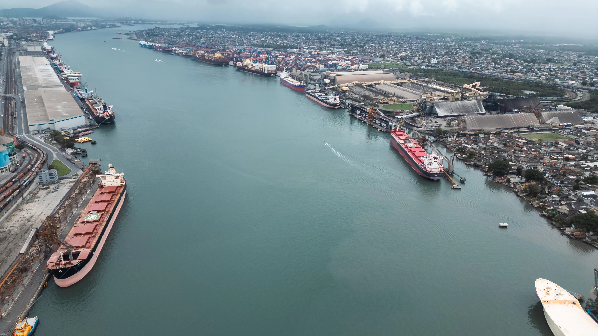
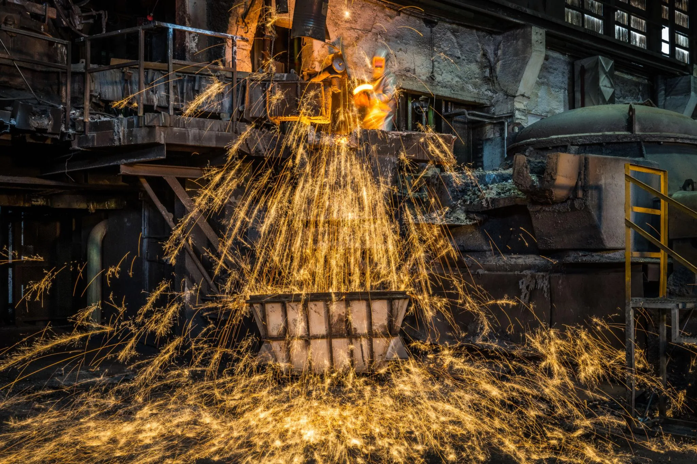
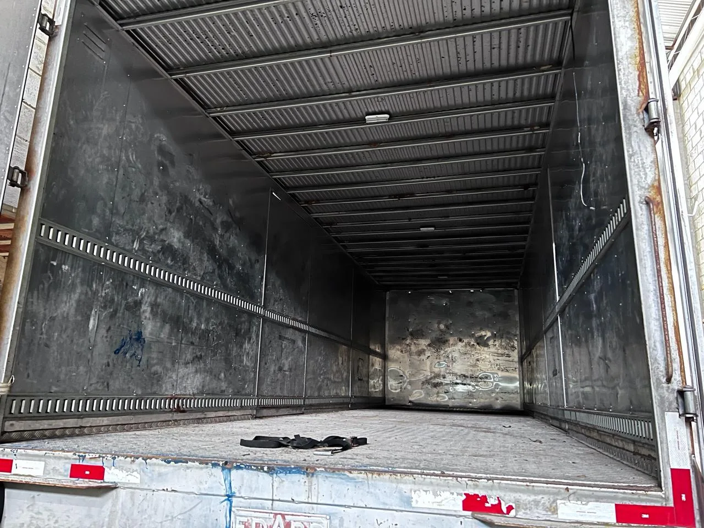
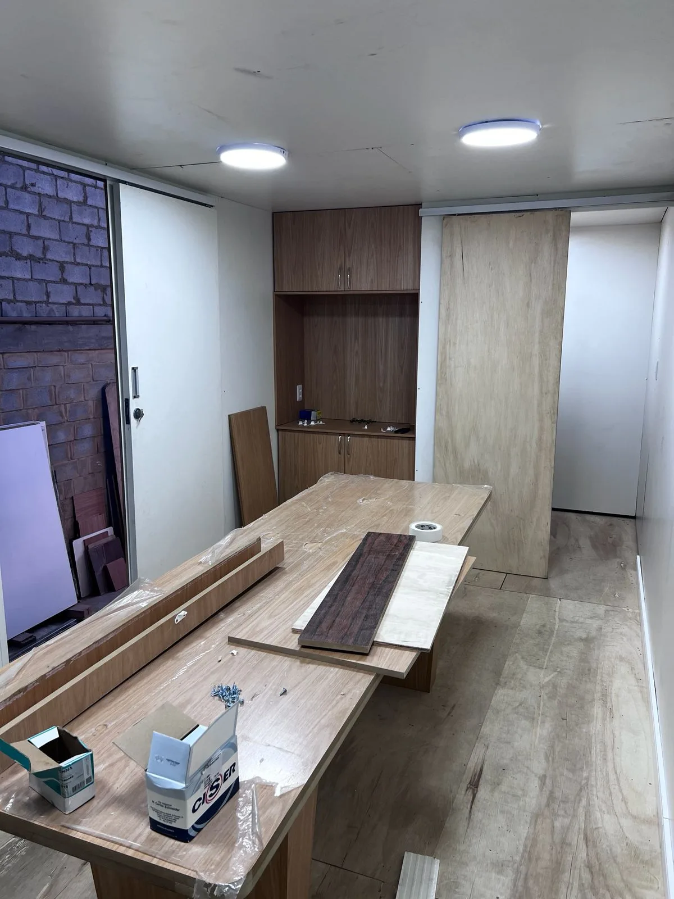
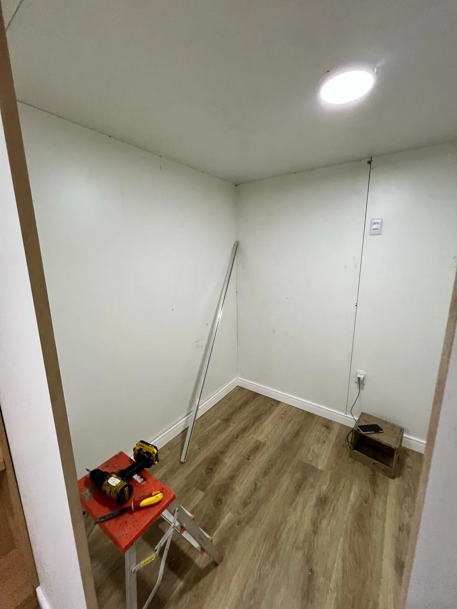

Construção Civil
Serviços de execução, reforma, manutenção e restauração para estruturas comerciais e industriais.
Nosso Trabalho
A MRX Serviços atua em construção civil, naval, offshore, estruturas metálicas, salas limpas e mobiliário sob medida, com soluções planejadas para cada necessidade operacional.
Como atuamos
Nosso trabalho começa pela compreensão da necessidade do cliente. A partir disso, indicamos caminhos para execução, manutenção, restauração ou fabricação, considerando segurança, organização e qualidade na entrega.
Atendemos demandas comerciais e industriais em ambientes que exigem cuidado técnico, adaptação, cumprimento de processos e responsabilidade na execução.
Áreas de atuação
Serviços de execução, reforma, manutenção e restauração para estruturas comerciais e industriais.
Atuação em ambientes operacionais que exigem planejamento, segurança e adequação técnica.
Fabricação, montagem e manutenção de estruturas metálicas para diferentes aplicações técnicas.
Soluções sob medida para ambientes controlados, áreas técnicas e necessidades específicas.
Mostruário
Uma visão rápida de serviços realizados pela equipe, com foco em restauração, manutenção, organização de obra e entrega técnica.


Antes e depois
Um exemplo visual do cuidado aplicado nos serviços de restauração, manutenção e acabamento.


Descrição da obra
Serviço realizado para recuperar a área, melhorar o acabamento e entregar um ambiente mais organizado, funcional e adequado ao uso do cliente.
Galeria
Fotos reais de obras, restaurações, manutenções e serviços executados pela equipe em campo.



Próximo passo
Entre em contato com a MRX Serviços para conversar sobre a melhor solução técnica para sua empresa.